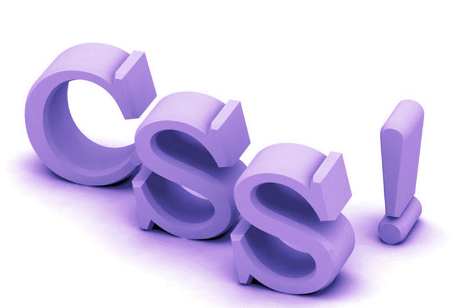

W3C标准：World Wide Web Consortium 万维网联盟 万维网联盟（外语缩写：W3C）: 标准不是某一个标准，而是一系列标准的集合。网页主要由三部分组成：结构（Structure）、表现（Presentation）和行为（Behavior）。
 表现标准语言CSS
CSS （层叠样式表）:英文全称：Cascading Style Sheets
是一种用来表现HTML或XML等文件样式的计算机语言。CSS不仅可以静态地修饰网页，还可以配合各种脚本语言动态地对网页各元素进行格式化。 CSS 能够对网页中元素位置的排版进行像素级精确控制，支持几乎所有的字体字号样式，拥有对网页对象和模型样式编辑的能力。
AngularJS
AngularJS 诞生于2009年，由Misko Hevery 等人创建，后为Google所收购。是一款优秀的前端JS框架，已经被用于Google的多款产品当中。AngularJS有着诸多特性，最为核心的是： MVC、模块化、自动化双向数据绑定、语义化标签、依赖注入等等。